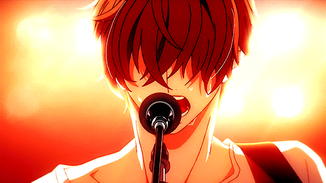

86 - Eighty Six
Conta a história de humanos que estão enfrentando uma Guerra brutal contra as máquinas há 9 anos e, para que a República de San Magnólia e seus 85 distritos fiquem em segurança, o governo e as forças militares mantém um terrível segredo sobre as frentes do campo de batalha.

Angel Beats
A história se passa no ambiente de um colégio na vida após a morte, uma espécie de limbo onde as pessoas vivenciaram traumas ou adversidades na vida e devem superá-los antes de falecer e reencarnar. A história segue Yuzuru Otonashi, um menino com amnésia que acaba na vida após a morte.

Ano Hi Mita Hana No Namae Wo Bokutachi Wa Mada Shiranai
Conta a história de um grupo de seis amigos de infância se separam após um deles, Meiko "Menma" Honma, morrer em um acidente. Dez anos seguintes desta tragédia, o líder do grupo, Jinta Yadomi, isola-se da sociedade e vive recluso

Given
Conta a história de um grupo de quatro alunos de uma banda de rock amadora e as relações românticas que se formam entre eles: entre o guitarrista Ritsuka Uenoyama e o vocalista Mafuyu Satō (e seu cachorro, Kedama Satō), e entre o baixista Haruki Nakayama e o baterista Akihiko Kaji.
Kimi No Suizou Wo Tabetai
A história desenrola-se sob o ponto de vista de um protagonista sem nome que encontra um diário num hospital um dia. O diário pertence à sua colega de classe, uma menina chamada Sakura Yamauchi, que revela estar a sofrer de uma doença terminal no seu pâncreas e que só tem alguns meses para viver.

Koe No Katachi
A história é sobre uma estudante com problemas de audição que sofre com o bullying dos colegas e decide mudar de escola. Anos mais tarde, um dos rapazes que a importunavam resolve se redimir.

Plastic Memories
Sua história decorre num mundo futurista, onde humanos e androids vivem lado a lado. Acontece que estes androids não são apenas robôs. Têm a aparência humana, têm uma alma e a capacidade de ganhar memórias.

Shigatsu Wa Kimi No Uso
A história gira em torno do pianista prodígio Kousei Arima, que teve desde novo uma educação rigorosa para se tornar um grande pianista. Contudo, após a morte de sua mãe, Kousei entra em um colapso nervoso durante um recital em que participaria aos onze anos de idade.

Shingeki No Kyojin
Conta a história de um mundo onde a humanidade vive dentro de cidades cercadas por três enormes muralhas que os protegem dos gigantescos humanóides devoradores de humanos chamados de Titãs; a história segue Eren Yeager, que jura exterminar os Titãs após um Titã causar a destruição de sua cidade natal e a morte de sua mãe.
Assistir 3º temporada (parte 2)
Assistir 4º temporada (parte 2)
Assistir 4º temporada (parte final)

Youkoso Jitsuryoku Shijou Shugi No Kyoushitsu
A história gira em torno do protagonista Kiyotaka Ayanokouji, um estudante da Classe D (que é onde a escola despeja os seus alunos “inferiores” para os ridicularizar), da escola Koudo Ikusei Senior High School, uma escola onde 100% dos alunos vão para a universidade ou arranjam emprego.Por uma certa razão, Kiyotaka foi negligente no seu exame de admissão e foi colocado na classe D. Após conhecer Suzune Horikita e Kikyou Kushida, dois outros estudantes da sua classe, a situação de Kiyotaka começa a mudar.